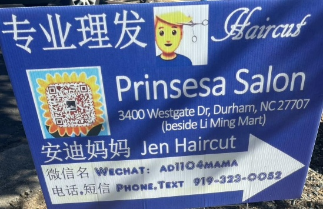

请问大家Duke附近有给女孩子理发的发型师可以推荐的吗？谢谢。
开心果:
[Contact Card] 安迪妈妈（张桢）
开心果:
@'28-Day-OH 安迪妈妈有给女士做头发，还染发，但是不知道符不符合您的fashion要求? 你蛮问问看
雨生百谷:
她剪得挺好的，我儿子剪过一次效果不错
GangY:
@开心果-28-NC 太好了，谢谢[ThumbsUp][ThumbsUp]
Sharon:
@'28-Day-OH 我儿子也在安迪妈妈那里剪发，最好提前预约。
buena suerte🍀🍀 🍀:
